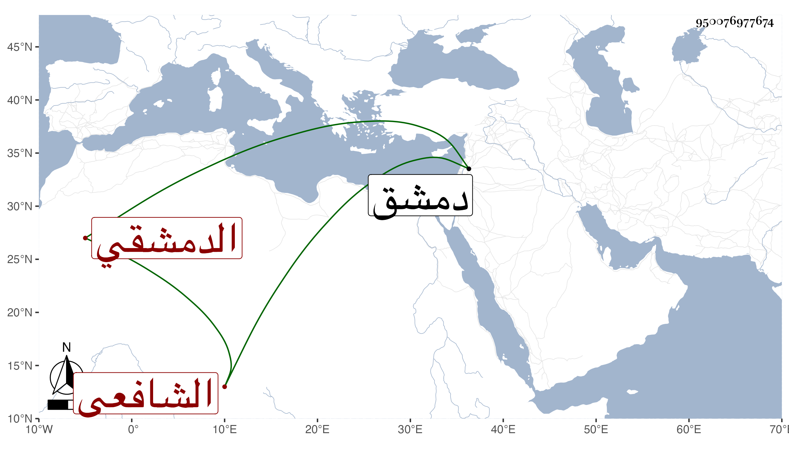

0902Sakhawi.DawLamic.ITO20230111-ara1.EIS1600.950076977674
Biography ID: 950076977674
567
أحمد بن محمد بن نشوان بن محمد بن نشوان بن محمد بن أحمد الشهاب الحواراني الدمشقي الشافعي الآتي أبوه ويعرف بابن نشوان . ولد سنة سبع وخمسين وسبعمائة وقدم دمشق فقرأ القرآن وادب بني الشهاب الزهري فصار يحفظ بتحفظهم التمييز للبارزي بل دار معهم على الشيوخ في الدروس إلى أن ننبه وفضل وأذن له الزهري في جمادى الأولى سنة إحدى وتسعين وكذا أذن له البلقيني في الإفتاء سنة ثلاث وتسعين واستقر في تدريس الشامية البرانية وتصدر بالجامع وناب في الحكم بعد الفتنة الكبرى وانتفع به الطلبة وقصد بالفتاوى وكان يحسن الكتابة عليها ويتكلم في العلم بتؤدة وسكون وإنصاف لوفور عقله وحسن محاضرته . مات بعد أن حصل له استسقاء طال مرضه به في جمادى الأولى سنة تسع عشرة ذكره شيخنا في أنبائه وابن قاضي شهبة في طبقاته .
